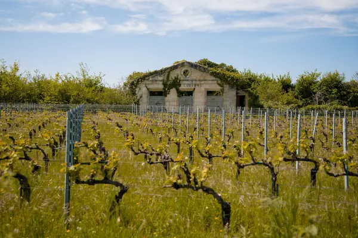

Home › Grapes › Cabernet Franc
Cabernet Franc grape

Photo: Wojciech Rzepka on Unsplash
Cabernet Franc is a red grape known for red cherry, herbs, pepper. Its best-known homes are Loire, Bordeaux.
Origin and history
Probably originated in the Basque Country of Spain before settling in Bordeaux and the Loire; DNA shows it is a parent of Cabernet Sauvignon, Merlot and Carménère.
Where it grows
Loire (Chinon, Bourgueil, Saumur-Champigny), Bordeaux (Saint-Émilion), Friuli, Hungary's Villány, California, Virginia, New York and Canada.
Structure
Medium body, medium to high acidity and medium, fine tannins: lighter and more fragrant than Cabernet Sauvignon.
Aromas, young and aged
Young: raspberry, red cherry, violet, graphite, bell pepper and herbs. With age: tobacco, leather, earth and dried cherry.
Ageing
Most Loire reds best within 3–8 years; top Chinon and Saint-Émilion can age 20 or more.
Also known as
Breton (Loire), Bouchet (Saint-Émilion and Pomerol).
Good to know
Château Cheval Blanc in Saint-Émilion is famous for blends with more Cabernet Franc than Merlot, and the grape is used for Canadian icewine.
Wine regions for Cabernet Franc
Cabernet Franc wines to try
Real bottles from The Wine Library.
Antinori Tignanello
Tuscany · Toscana IGT · Sangiovese, Cabernet Sauvignon, Cabernet Franc
A Super Tuscan: cherry, plum, spice and polished tannins.
Food: Bistecca alla fiorentina, ragù
Tenuta San Guido Sassicaia
Tuscany · Bolgheri Sassicaia · Cabernet Sauvignon, Cabernet Franc
Elegant Cabernet blend: blackcurrant, herbs, cedar and fine structure.
Food: Roast lamb, wild boar
Mission Hill Oculus
Okanagan Valley · Merlot, Cabernet Sauvignon, Cabernet Franc
Canada's flagship Bordeaux blend: dark berries, cedar, mocha and fine structure.
Food: Beef tenderloin, venison, mushrooms
Baron Philippe de Rothschild Mouton Cadet Rouge
Bordeaux · Merlot, Cabernet Sauvignon, Cabernet Franc
Easy everyday claret: red berries, plum and soft tannins.
Food: Roast chicken, burgers, pâté
Château Tour Saint Christophe Saint-Émilion Grand Cru
Bordeaux · Saint-Émilion · Merlot, Cabernet Franc
Limestone-terrace Saint-Émilion: fresh, ripe and modern.
Food: Duck, lamb
Château Beauséjour Bécot Saint-Émilion 1er Grand Cru Classé
Bordeaux · Saint-Émilion · Merlot, Cabernet Franc
Plateau limestone Saint-Émilion: plush fruit and freshness.
Food: Lamb, beef
Château Troplong Mondot Saint-Émilion 1er Grand Cru Classé
Bordeaux · Saint-Émilion · Merlot, Cabernet Franc, Cabernet Sauvignon
From Saint-Émilion's highest point: dark fruit, freshness and structure.
Food: Beef, game
Château Beauséjour (Duffau-Lagarrosse) Saint-Émilion 1er Grand Cru Classé
Bordeaux · Saint-Émilion · Merlot, Cabernet Franc
Limestone-plateau Saint-Émilion: elegant, mineral and long.
Food: Lamb, veal
Château Cheval Blanc Grand Vin
Bordeaux · Saint-Émilion · Cabernet Franc, Merlot
Iconic Saint-Émilion with high Cabernet Franc: silky, fragrant and timeless.
Food: Roast lamb, truffle
Château L'Évangile Pomerol
Bordeaux · Pomerol · Merlot, Cabernet Franc
Opulent Pomerol: plum, truffle and velvety tannins.
Food: Beef, mushrooms
Château La Conseillante Pomerol
Bordeaux · Pomerol · Merlot, Cabernet Franc
Silky, perfumed Pomerol with violets and red fruit.
Food: Lamb, duck
Château Lafleur Pomerol
Bordeaux · Pomerol · Merlot, Cabernet Franc
Tiny, revered Pomerol estate: intense, complex and very long-lived.
Food: Game, beef
Château Siaurac Lalande-de-Pomerol
Bordeaux · Lalande-de-Pomerol · Merlot, Cabernet Franc
Supple, plummy neighbour of Pomerol.
Food: Duck, lamb
Château Haut-Brion Grand Vin
Bordeaux · Pessac-Léognan · Merlot, Cabernet Sauvignon, Cabernet Franc
The Graves first growth: smoky, earthy and refined.
Food: Game, beef
Château Léoville Las Cases Grand Vin
Bordeaux · Saint-Julien · Cabernet Sauvignon, Merlot, Cabernet Franc
Classic, structured Saint-Julien built for long ageing.
Food: Lamb, beef
Château de Villeneuve Saumur-Champigny
Loire Valley · Saumur-Champigny · Cabernet Franc
Fresh Loire Cabernet Franc: raspberry and graphite.
Food: Pork, charcuterie
Château de Ligré Chinon
Loire Valley · Chinon · Cabernet Franc
Mature Chinon: red fruit, earth and pencil shavings.
Food: Game birds, mushrooms
Catherine et Pierre Breton Bourgueil Les Perrières
Loire Valley · Bourgueil · Cabernet Franc
Organic, structured Bourgueil that ages well.
Food: Lamb, duck
Tenuta dell'Ornellaia Ornellaia
Tuscany · Bolgheri Superiore · Cabernet Sauvignon, Merlot, Cabernet Franc
Bolgheri icon: opulent dark fruit, spice and fine tannins.
Food: Beef, lamb
Craggy Range Sophia
Hawke's Bay · Gimblett Gravels · Merlot, Cabernet Franc
Bordeaux-style blend from the Gimblett Gravels.
Food: Beef, lamb
Leeu Passant Stellenbosch Cabernet Sauvignon-Cabernet Franc
Stellenbosch · Cabernet Sauvignon, Cabernet Franc
Old-vine Cape Cabernet blend: fine and savoury.
Food: Lamb, beef
Inniskillin Cabernet Franc Icewine
Niagara Peninsula · Cabernet Franc
Rosé-hued icewine: strawberry, rhubarb and honey.
Food: Berry desserts, chocolate
Burrowing Owl Cabernet Franc
Okanagan Valley · Cabernet Franc
Desert-grown Okanagan Franc: raspberry, red plum and dried herbs with supple, polished tannins.
Food: Grilled lamb chops, mushroom risotto
Similar red grapes
Explore all grapes in the interactive guide
The Wine Reference newsletter
New wines, stories and career guides, one email a week at most.
Over 18s only. Unsubscribe any time with one click. Your email is stored securely by Kit and never shared.
Support The Wine Reference
This guide is free, with no paywall. If it helped you choose a bottle, you can buy me a glass and keep it growing.
🍷 Buy me a glass